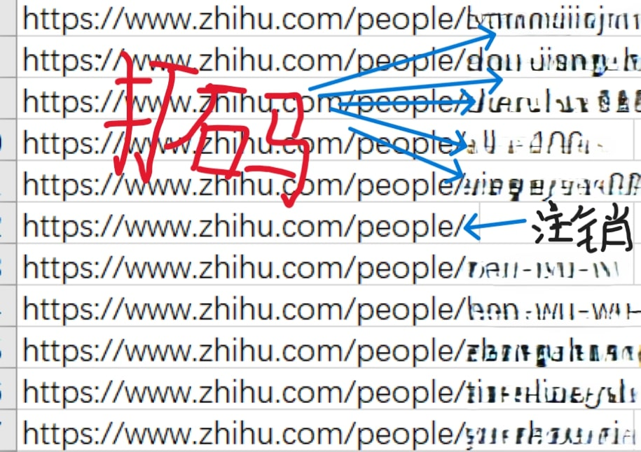
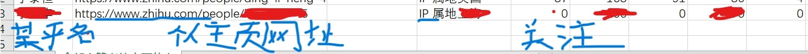
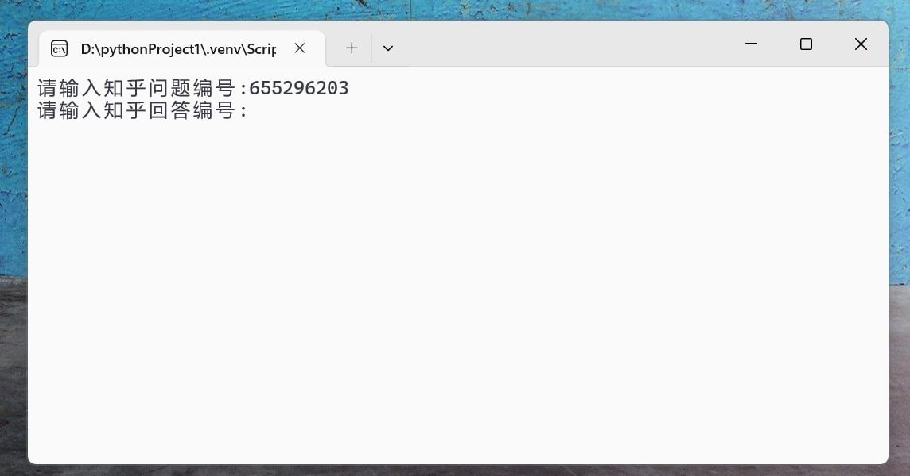

| IP | 支持 | 反对 | 差 |
|---|---|---|---|
| 山东 | 144 | 108 | 36 |
| 湖南 | 66 | 40 | 26 |
| 山西 | 38 | 17 | 21 |
| 河南 | 75 | 57 | 18 |
| 云南 | 33 | 16 | 17 |
| 江苏 | 154 | 139 | 15 |
| 安徽 | 56 | 47 | 9 |
| 广西 | 40 | 32 | 8 |
| 内蒙古 | 19 | 11 | 8 |
| 湖北 | 82 | 75 | 7 |
| 陕西 | 67 | 60 | 7 |
| 江西 | 34 | 27 | 7 |
| 北京 | 142 | 137 | 5 |
| 四川 | 109 | 104 | 5 |
| 甘肃 | 19 | 14 | 5 |
| 吉林 | 23 | 19 | 4 |
| 广东 | 209 | 206 | 3 |
| 黑龙江 | 29 | 26 | 3 |
| 马来西亚 | 4 | 1 | 3 |
| 河北 | 51 | 49 | 2 |
| 英国 | 6 | 4 | 2 |
| 青海 | 3 | 1 | 2 |
| 天津 | 33 | 32 | 1 |
| 新加坡 | 5 | 5 | 0 |
| 法国 | 1 | 1 | 0 |
| 泰国 | 1 | 1 | 0 |
| 印度尼西亚 | 1 | 1 | 0 |
| 韩国 | 1 | 1 | 0 |
| 贵州 | 14 | 15 | -1 |
| 宁夏 | 3 | 4 | -1 |
| 海南 | 9 | 11 | -2 |
| 意大利 | 1 | 3 | -2 |
| 澳大利亚 | 4 | 7 | -3 |
| 浙江 | 99 | 103 | -4 |
| 德国 | 3 | 7 | -4 |
| 中国台湾 | 3 | 7 | -4 |
| 美国 | 23 | 28 | -5 |
| 福建 | 47 | 54 | -7 |
| 新疆 | 13 | 20 | -7 |
| 辽宁 | 51 | 59 | -8 |
| 重庆 | 38 | 47 | -9 |
| 日本 | 8 | 17 | -9 |
| 加拿大 | 2 | 13 | -11 |
| 中国香港 | 4 | 18 | -14 |
| 未知 | 128 | 170 | -42 |
| 上海 | 95 | 154 | -59 |
| 1990 | 1968 |

Beware of the leopard123
原爬虫知乎程序,获取结果不完整,正在更新
不能获得一个知乎回答的全部点赞者链接,最多获取1999个,即使使用selenium或playwright(知乎限制).一个知乎回答的全部点赞者链接已被加密,不能JS逆向破解加密参数,即使携带cookies,知乎服务器也会故意给你返回错误的数据,给你返回不完整的数据,不完整的点赞者链接.
首先说明，虽然程序是我写的打包的，下面也提供了txt形式的源代码，在另一台windows运行也没问题，微云步沙箱只是提示不要安装在C盘，腾讯哈博也检测没问题。但是从本网页下载exe文件仍然会被我的edge/chorme浏览器警告然后拦截。有顾虑的可以看最后的安全运行方法。
非javascript逆向爬虫,知乎限制，一个回答最多能爬1980个点赞者链接,每小时爬取600条左右
exe运行输出结果csv文件也是表格，和excel几乎没差别excel可打开。
手机端：
知乎app——选择一个知乎回答——分享——分享链接——复制到一个空白文档
就会出现“https://www.zhihu.com/question/655477917/answer/3492900832”这类网址
"question"后面的数字就是问题编号，"answer"后面的数字就是回答编号.
电脑网页端：
打开知乎网页——选择一个知乎回答——分享——分享链接——复制到一个空白文档或网址输入栏
就会出现“https://www.zhihu.com/question/655477917/answer/3492900832”这类网址
"question"后面的数字就是问题编号，"answer"后面的数字就是回答编号.如下图.
爬一个回答的点赞者主页网址链接(最多能爬1980个)，输出一个csv文件.
结果如下图.已注销用户主页的网址：https://www.zhihu.com/people/，正常用户的主页网址：https://www.zhihu.com/people/ +" 注册时的用户名(中文名会改为英文/英文+数字)".如下图.
访问一个知乎用户的主页网址链接，获得网页源代码，从源代码筛选出9类信息.知乎名,主页网址链接,个人签名,IP属地,被关注,关注,赞同,喜欢,收藏.输出一个csv文件.如下图.
安装包是exe文件，还不会设置图形化操作页面，所以双击会打开命令行运行，只需输入"问题编号","回答编号".如下图.
知乎爬虫exe运行输出2个csv文件，点赞者的地域IP分类运行输出一个csv文件
知乎爬虫exe运行出现，“错误”，不用理会，这些错误都是已注销用户
第二个exe文件运行需要读取第一个exe文件输出的一个文件，2个exe文件必须放在同一个文件夹。exe文件最好放在D/E/F等盘，不要放C盘。
知乎爬虫压缩包 点赞者的地域IP分类压缩包 知乎爬虫的源代码 点赞者的地域IP分类的源代码安全运行方法
云沙箱检测exe文件，安全无毒后运行 哔哩哔哩5款沙箱工具推荐 微步云沙箱 腾讯哈勃分析系统 VirusTotal VirScan 大圣云沙箱
或者淘宝12元购买家庭版windows升级专业版，专业版有windows sandox功能，直接把exe文件拖拽到windows sandox运行windows sandbox教程